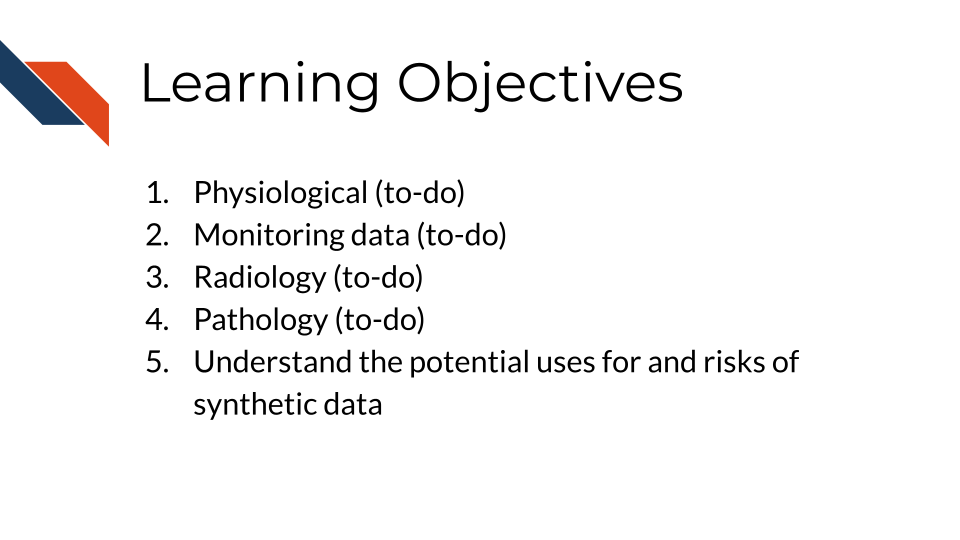

Chapter 3 Multimodal Data
3.1 Learning Objectives

Clinical research is becoming increasingly multimodal, meaning that it combines more classical clinical data like EHR with other forms of data. The use of different kinds of data together can be very valuable for understanding the underlying biology leading to different forms of cancer, evaluating new potential treatments for cancer, and understanding rates of cancer across various populations, including what exposures may influence those rates.
These data can include:
- Omic data
- Physiological data
- Imaging data
- Monitoring data
- Geographic data
- Environmental data
- Social determinants of health data
- Synthetic data (in some cases)
Methods for finding patterns when combining different kinds of data together, as well as how to harmonize and store data together are still in development. Machine Learning and AI show particular promise for finding patterns across vast amounts of data https://arxiv.org/abs/2510.23639 , https://www.mdpi.com/2079-9292/11/8/1199, https://www.nature.com/articles/s41746-022-00712-8 and indicate that prediction performance across many different biomedical studies are improved when multiple data types are combinedhttps://www.nature.com/articles/s41746-022-00712-8 .
3.1.1 Omic Data
Omic data such as genetic or protein information about patients can also be combined with clinical data to enhance research. Examples include polygeneic risk scores using single nucleotide polymorhisms https://pmc.ncbi.nlm.nih.gov/articles/PMC4157459/, methylation risk scores using DNA methylation data, transcriptomic data (or data about the expression of RNAs), and more recently evaluation of microbiome data and proteomic data https://pmc.ncbi.nlm.nih.gov/articles/PMC11682975/ .
3.1.2 Physiological Data
This data includes any type of test measurement that may be performed to evaluate bodily form and function including but not limited to: Urine and blood test measurements (such as levels of vitamins, minerals, hormones, antibodies, as well as cell compositions and characteristics, presence and type of bacteria or viruses and more) Vital measurements (blood pressure, pulse rate, oxygen level, body temperature), and more. Electrode based measurements to assess organ function (such as electrocardiogram measurements of heart rhythm, and electroencephalogram of brain activity)
3.1.3 Imaging Data
There are several types of clinical imaging data. This includes pathology, radiology, and molecular based imaging among others (https://ilearn.th-deg.de/pluginfile.php/480243/mod_book/chapter/8248/updated_JXIJSIS2015.pdf ). All of these produce a file or multiple files of imaging data that can be paired with demographics of individuals or other clinical data to perform research.
Pathology imaging involves examination of tissue, fluid, and other bodily samples like free cells. These samples are taken from patients in the form of tissue biopsies, body fluid collections, or other sampling methods. Historically this was done on slides with various forms of staining to help clinicians and researchers examine cell populations and cellular and extracellular structures. More modern techniques are allowing for faster preparations that don’t require slides and offer greater capacity for visualization https://pmc.ncbi.nlm.nih.gov/articles/PMC12054849/.
Radiology imaging involves using radiation or magnets and sound waves to evaluate structures in living patients. This includes radiation-based methods such as X-ray and Computed Tomography (CT), as well as magnet based methods like Magnetic Resonance Imaging (MRI), and sound wave-based methods called ultrasound which are often used to detect tumors https://ilearn.th-deg.de/pluginfile.php/480243/mod_book/chapter/8248/updated_JXIJSIS2015.pdf.
Molecular imaging involves evaluation of molecular function within living patients. This can include radiological techniques such as Positron Emission Tomography (PET) and Single Photon Emission Computed Tomography (SPECT) imaging. Positron Emission Tomography uses radiotracers to monitor physiological aspects such as metabolism of cancer tumors or bone mineralization in bone cancer. SPECT is used to monitor apoptosis and lymph node mapping linkinghub.elsevier.com/retrieve/pii/S0001299803700063, https://pmc.ncbi.nlm.nih.gov/articles/PMC6667427/. In addition Magnetic Resonance Imaging (MRI) with contrast agents, have helped investigators and clinicians examine biomarkers less invasively in human samples. Computed Tomography (CT) combined with contrast agents can also help evaluation of tissue composition and microstructure. Newer forms of molecular imaging include Magnetic Particle Imaging (MPI) which uses the magnetic properties of injected tracers to create 3D images of vasculature or Optical Coherent Tomography (OCT) which has proven to be a great method for shallow noninvasive in situ biopsies (meaning biopsies that don’t require physically taking a sample from a patient). Hybrid imaging, combining multiple forms of molecular imaging, such as PET and CT continue to be developed and offer advantages over use of a single method https://www.jscimedcentral.com/journal-article-pdf/JSM-Cardiothoracic-Surgery/cardiothoracicsurgery-5-1019.pdf , https://pmc.ncbi.nlm.nih.gov/articles/PMC6667427/ .
3.2 Monitoring data
This section was written by: Jennifer Kelleher, Ph.D.1; Abigail S. Robbertz, Ph.D.1; and Meghan E. McGrady, Ph.D.1,2
NOTE: Jennifer Kelleher, Ph.D.1 and Abigail S. Robbertz, Ph.D.1 contributed equally.
1 Center for Adherence and Self-Management, Division of Behavioral Medicine and Clinical Psychology, Cincinnati Children’s Hospital Medical Center, Cincinnati, OH, USA
2 Department of Pediatrics, University of Cincinnati College of Medicine, Cincinnati, OH, USA
The work discussed in this section was also supported by the National Cancer Institute at the National Institutes of Health (R21CA263704, K07CA200668) to MEM. JK and ASR are supported by the Eunice Kennedy Shriver National Institute of Child Health & Human Development at the National Institutes of Health (T32HD068223). The content is solely the responsibility of the authors and does not necessarily represent the official views of the National Institutes of Health.
Electronic monitoring devices are digital tools that can be used to track health behaviors over time such as:
- Sleep
- Physical activity
- Medication adherence
- Calorie intake
Electronic monitoring devices can also be used to assess physical health indicators including: * Blood glucose levels * Blood pressure * Heart rate and heart rate variability * Oxygen saturation
Electronic monitoring devices enable researchers to track day-to-day health behaviors in the patient’s “real-world” setting. This allows researchers to explore patterns or changes in a patient’s health behavior and provides a richer understanding of daily behavior over time.
3.2.1 Benefits of Monitoring Data
Electronic monitoring devices often include data transmission abilities that enable healthcare providers or researchers to access these data in near real-time potentially informing intervention and/or medical decision-making.
Electronic monitoring devices also have the potential to produce more accurate estimates of health behaviors than alternative strategies (e.g., self-report) as they are not subject to recall bias and can detect efforts to inflate adherence due to social desirability.
3.2.2 Considerations
This section is not exhaustive. Research teams are strongly encouraged to consult with experts with experience and training in collecting and analyzing data from specific devices.
To ensure the outcome variables are aligned with the research question of interest and ethical and age/developmental considerations (Psihogios et al. (2024); Modi et al. (2012)) have been appropriately accounted for, readers are encouraged to consult with researchers in their field who have integrated these measurement strategies into their work.
3.2.2.1 Medication Adherence
There are three major components of medical adherence (the tracking of taking medication):
- Initiation: Starting a prescribed regimen
- Implementation: The amount of which a patient’s medication-taking behavior corresponds with the treatment regimen or protocol
- Discontinuation: Stopping a perscribed regimen
For more information see:
3.4 Synthetic Data
Synthetic data are artificially generated datasets designed to reflect the structure and patterns of real-world populations, without containing information about actual patients (Susser et al. 2024). There are many ways to generate synthetic data. Some approaches are simple, like creating partially synthetic data by replacing potentially identifying pieces of information with synthetic values. Others are more complex, like using AI systems to fully generate synthetic patient notes. The goal of synthetic data is to mimic the characteristics and patterns in real patient data, while avoiding privacy concerns, cost, or biases of using real datasets.
3.4.1 Uses of synthetic data
There are several possible uses for synthetic data:
- Testing or validation: synthetic data may be easier to create or access than real clinical data, while being similar enough to test or validate new tools, methods, or data handling pipelines. It can also be shared between institutions, and used to compare the performance of competing tools. However please see the consideration section about some limitations of this approach.
- Augmenting or balancing datasets: real patient data can have subgroups with low representation, which can lead to algorithmic bias in some applications. Synthetic data can be used to balance data so that there are more observations that represent these groups.
- Supplementing controls groups in clinical trials: Conducting clinical trials requires a lot of time and money. Using synthetic data has been suggested to supplement control arms in clinical trials, in order to reduce costs or realign funds to add more patients to the experimental arm (Elvatun et al. 2025).
- Augmenting data for rare disease areas: Rare disease research often suffers from small sample sizes of patient data and can be especially susceptible to privacy concerns, which can lead to underpowered studies. Synthetic data have the potential to be used for detection and development of treatment for rare diseases (Mendes, Barbar, and Refaie 2025).

3.4.2 Resources for generating synthetic data
There are a wide range of ways to generate synthetic data for different uses. Some tools to access or generate synthetic clinical data include:
- Synthea: a synthetic patient population simulator, that generates synthetic medical histories. This tool can be used without restriction for research, industry, or government (Walonoski et al. 2018).
- SyntheticMass: a synthetic dataset of residents of Massachusetts (generated using Synthea), which statistically mirrors the real population in terms of demographics, disease burden, and healthcare interaction. This data is free of PII and PHI (Walonoski et al. 2018).
- simstudy: an R package used to simulate datasets. The user specifies a set of relationships between covariates and type of study, and the tool generates synthetic data (Goldfeld and Wujciak-Jens 2020).
- synthpop: an R package that takes patient data with sensitive values, and replaces those values with synthetic values, while minimally distorting the statistical summaries of the dataset (Nowok, Raab, and Dibben 2016).
3.4.3 Benefits of synthetic data
Using synthetic data has a variety of potential benefits.
- Reducing privacy risks: synthetic data are intended to have little or no information about individuals, and therefore reduce privacy risks associated with using clinical data. This also means they can more easily be shared across institutions and without needing to be granted access.
- Lower cost to generate: synthetic data typically cost less to generate than the cost to collect real patient data, and once an AI system has been trained to generate synthetic data then it can keep producing more. This is particularly useful for training AI systems, which need large sample sizes.
3.4.4 Concerns about synthetic data
Although there is a lot of potential for synthetic data to revolutionize fields that use clinical data, there are also quite a few practical and ethical concerns.
- Accuracy and reliability: it is challenging to assess how well synthetic data actually mimic real data. Therefore, it is often unknown exactly how reliable statistical tests are based on synthetic data, as opposed to real patient data.
- Privacy risks: if synthetic data are built from real patient data, there are still threats of identifying patients in some cases, or small subgroups of patients in other cases.
- Bias: using AI systems in many applications has been shown to lead to algorithmic bias. It is possible for synthetic data to reinforce biases from original patient data or to create new biases.
- Regulations are still in development: because synthetic data are often not considered to be personally identifiable information (PII) or protected health information (PHI), they are not regulated by the same guidelines as other types of clinical data. Different types of synthetic data have different ethical and privacy risks, and regulations are still in development to govern the use and sharing of these data (Nisevic, Milojevic, and Spajic 2025).
- Model collapse: when generative models are repeatedly trained on synthetic data rather than real data, the generated data may progressively diverge from true real-world patterns, reducing their utility.
While synthetic data have promise for several areas of clinical research, any synthetic data use needs to be carefully considered and validated.